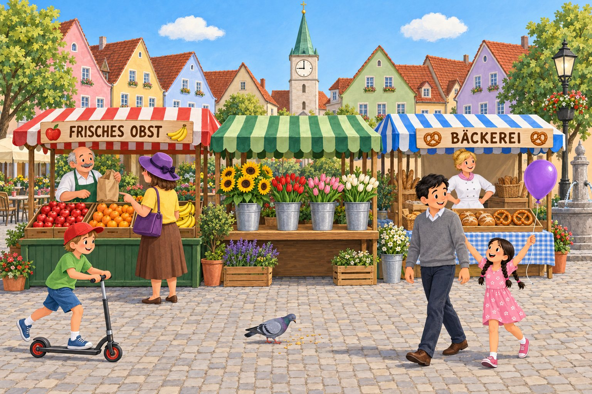
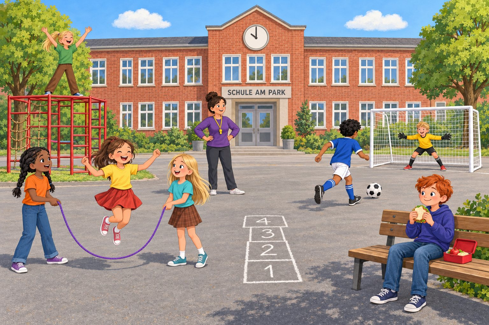
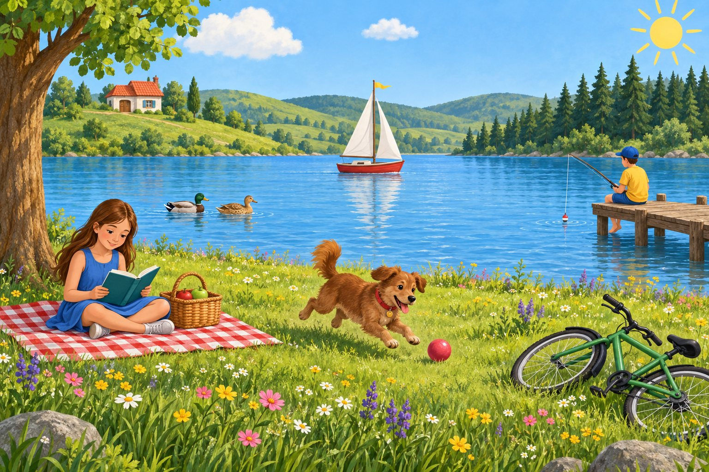

Hausaufgaben & Hausaufgabenüberprüfung
Zwölf kurze Hausaufgaben, die wie eine Treppe aufeinander aufbauen – vom mitgebrachten Bild bis zum Spickzettel für die Lerntheke. Jede Hausaufgabe wird in der nächsten Stunde gewürdigt und mit einer anderen, lernwirksamen Methode überprüft. Dazu: Hausaufgabenzettel, Logbuch, Kontrollliste, Feedbackkarten und drei Kurztests.

Das Hausaufgaben-Konzept der Reihe
Die Hausaufgaben dieser Reihe sind kein Anhängsel, sondern ein eigener Lernstrang: Sie sichern das Gelernte der Stunde, bereiten die nächste Stunde vor und werden dort immer aufgegriffen. Der rote Faden ist das mitgebrachte Bild aus HA 1: Die Kinder sammeln daran Stichwörter (HA 1), ordnen es in Bildbereiche (HA 2) und schreiben dazu eine Einleitung (HA 6, Wahlmöglichkeit). So arbeiten sie an „ihrem“ Bild – das motiviert und macht die Fortschritte sichtbar.
Der rote Faden: So bauen die Hausaufgaben aufeinander auf
- Schauen & sammeln (HA 1–2): eigenes Bild mitbringen, 8 Dinge notieren, in Vordergrund – Mittelgrund – Hintergrund einteilen.
- Sprache trainieren (HA 3–5): Präpositionen mit Dativ (eigenes Zimmer), treffende Verben (Wochenmarkt), genaue Adjektive (Lieblingsgegenstand als Rätsel).
- Textbausteine schreiben (HA 6–8): Einleitung (eigenes Bild oder Schulhof), Hauptteil-Ausschnitt (Vordergrund „Sommertag am See“), Schluss + Präsens.
- Ganzer Text (HA 9–10): Reinschrift „Auf dem Schulhof“, nach der Textlupe überarbeitete Endfassung mit drei markierten Verbesserungen.
- Wiederholen & einschätzen (HA 11–12): Spickzettel für die Lerntheke, Selbsteinschätzung auf der Lernlandkarte (AB 0), gezielt üben.
Unsere Prinzipien
Kurz und machbar
Jede Hausaufgabe dauert höchstens 20–30 Minuten, die meisten deutlich weniger. Sie ist so gestellt, dass alle Kinder sie ohne Hilfe der Eltern schaffen können. Die Zeitangaben auf dem Hausaufgabenzettel helfen auch den Familien.
Differenziert
Wo es sinnvoll ist, gibt es drei Wege: Basis mit Satzmustern und Wortspeicher, Standard und Profi mit Zusatz. Die Kinder wählen selbst – die Lehrkraft darf eine Stufe empfehlen.
Immer gewürdigt
Keine Hausaufgabe „verschwindet“. Jede wird in der Folgestunde genutzt: als Spielmaterial, Einstieg, Text für Feedback oder Grundlage für die Weiterarbeit. Wer sich Mühe gegeben hat, erlebt: „Das war wichtig.“
Lernwirksam statt Kontrolle
Statt „Hast du sie?“ steht die Frage „Was hast du gelernt?“ im Mittelpunkt. Die Überprüfungen sind kurze Übungsphasen (8–12 Minuten): Die Kinder lesen, vergleichen, verbessern und geben sich Rückmeldung.
Abwechslungsreich
Zwölf Hausaufgaben – zwölf Formen: Speed-Dating, Partnercheck, Bingo, Detektivarbeit, Rätselrunde, Daumen-Check, „2 Sterne und 1 Wunsch“, Kurztest, Textlupe, Rückmeldebogen, Galerie, Selbsteinschätzung.
Transparent
Alle Aufgaben stehen von Anfang an auf dem Hausaufgabenzettel. Die Kinder führen ein Hausaufgaben-Logbuch, die Lehrkraft eine Kontrollliste mit klaren Kürzeln.
Die Überprüfungsmethoden im Wechsel der Sozialformen
| Form | Methoden | Was die Kinder dabei lernen |
|---|---|---|
| PA Partner | Bild-Speed-Dating (HA 1), Partnercheck (HA 2), Verben-Detektive (HA 4), W-Fragen-Daumen (HA 6) | genau zuhören, vergleichen, Kriterien anwenden, freundlich korrigieren |
| SP Spiel | Präpositionen-Bingo (HA 3), Rätselrunde (HA 5) | Fachwissen in Bewegung und mit Spaß wiederholen |
| GA Gruppe | Vorlesen mit „2 Sterne und 1 Wunsch“ (HA 7), Textlupe (HA 9), Galerie (HA 11) | Rückmeldung geben und annehmen, von Beispielen lernen |
| EA Einzeln | 5-Minuten-Check (HA 8), Kurztests A und B, Selbsteinschätzung (HA 12) | den eigenen Lernstand ehrlich einschätzen |
| LK Lehrkraft | Rückmeldung mit Bewertungsraster (HA 10), Stichprobe am Beamer (HA 2) | gezielte, persönliche Rückmeldung ohne Note |
Fair bleiben: Umgang mit vergessenen Hausaufgaben
- Kurz melden statt Ausreden: Wer die Hausaufgabe nicht hat, sagt es zu Stundenbeginn leise der Lehrkraft und trägt es ins Logbuch ein. Kein Bloßstellen vor der Klasse, keine langen Diskussionen.
- Trotzdem mitmachen: Für jede Überprüfung gibt es einen Ersatzauftrag (bei der jeweiligen HA beschrieben), damit kein Kind nur zuschaut und alle vom Übungseffekt profitieren.
- Nachreichen: Die Hausaufgabe wird bis zur nächsten Stunde nachgereicht. In der Kontrollliste steht dann N – sie gilt als erledigt.
- Gründe ernst nehmen: Fehlt eine Hausaufgabe öfter, wird nachgefragt: Fehlt ein Bild zu Hause? Gibt es keinen ruhigen Arbeitsplatz? Ist die Aufgabe sprachlich zu schwer? Dann helfen die Bilderkiste der Lehrkraft (Postkarten, Kalenderbilder, Prospekte), Satzmuster oder ein Platz in der Hausaufgabenbetreuung.
- Ab dreimal „fehlt“ ohne Nachreichen: kurzes Gespräch mit dem Kind, dann Elterninfo (Notiz im Hausaufgabenzettel oder Anruf). Hausaufgaben werden nie als Strafe verdoppelt.
Lupo sagt: Vergessen kann jedem Detektiv passieren. Wichtig ist, dass du es ehrlich sagst, in dein Logbuch schreibst und die Aufgabe nachholst. Dann ist alles wieder gut!
Bewertung
Die Hausaufgaben werden nicht benotet. Sie dienen dem Üben; Fehler sind ausdrücklich erlaubt. Zuverlässigkeit und Sorgfalt können – nach dem Konzept der Schule – in die Beurteilung der sonstigen Mitarbeit einfließen. Die Rückmeldungen (Feedbackkarten, Bewertungsraster zu HA 10) sind formativ: Sie zeigen den nächsten Lernschritt. Achten Sie auf die Vorgaben Ihres Landes und Ihrer Schule zum täglichen Gesamtumfang der Hausaufgaben (Absprache mit den anderen Fächern).
Elterninfo
Zu Beginn der Reihe erhalten die Familien eine kurze Information (Vorlage unten) zusammen mit dem Hausaufgabenzettel. Wichtig für die Eltern: (1) Für HA 1 braucht das Kind ein Bild (Postkarte, Kalenderbild, Zeitschrift) – keine Fotos von Familienmitgliedern; wer keins hat, bekommt eins aus der Bilderkiste. (2) Keine Hausaufgabe soll länger als 20–30 Minuten dauern – wird es länger, bitte abbrechen und eine Notiz schreiben. (3) Eltern sollen nicht korrigieren, sondern nachfragen: „Erklär mir mal, was du gemacht hast.“
Vorlage: Elternbrief zur Reihe „Bildbeschreibung“ (zum Kopieren)
Liebe Eltern,
in den nächsten Wochen lernt Ihr Kind im Deutschunterricht, Bilder genau zu beschreiben. Am Ende der Reihe schreiben wir eine Klassenarbeit. Die Hausaufgaben bauen aufeinander auf und sind auf dem beiliegenden Hausaufgabenzettel aufgeführt. Jede Aufgabe dauert höchstens 20 bis 30 Minuten.
Für die erste Hausaufgabe braucht Ihr Kind ein Bild: eine Postkarte, ein Kalenderbild oder ein Bild aus einer Zeitschrift. Bitte geben Sie keine Fotos von Familienmitgliedern mit. Das Bild wird mehrmals gebraucht und sollte in einer Klarsichthülle im Deutschheft bleiben. Falls kein passendes Bild zu Hause ist, ist das kein Problem – Ihr Kind bekommt eines von mir.
So können Sie helfen: Fragen Sie nach, was Ihr Kind gelernt hat, und lassen Sie es Ihnen etwas beschreiben. Bitte korrigieren Sie die Texte nicht – Fehler zeigen mir, was wir noch üben müssen. Wenn eine Aufgabe zu lange dauert, darf Ihr Kind aufhören; schreiben Sie mir dann bitte eine kurze Notiz.
Mit freundlichen Grüßen
…………………………… (Deutschlehrkraft)
Übersicht: Hausaufgaben 1–12 auf einen Blick
Jede Hausaufgabe wird in der Stunde gestellt, deren Thema sie übt, und in der nächsten Stunde überprüft. Die Dauer der Überprüfung ist in den Stundenverläufen eingeplant. Klick auf die Nummer für die ausführliche Beschreibung.
| HA | gestellt in | Aufgabe (Kurzfassung) | Zeit zu Hause | Niveau | Überprüfung (Stunde · Methode) | Dauer |
|---|---|---|---|---|---|---|
| HA 1 | Std. 1 | Ein Bild mitbringen (ohne Familienfotos) und 8 Dinge darauf als Stichwörter notieren. | ca. 15 Min. | Basis ★★★: mit Adjektiven | Std. 2 · Bild-Speed-Dating PA | 10 Min. |
| HA 2 | Std. 2 | Das eigene Bild in Vordergrund, Mittelgrund, Hintergrund einteilen (Tabelle, je mind. 3 Dinge). | ca. 15–20 Min. | Basis ★/★★/★★★ | Std. 3 · Partnercheck mit Kontrollfragen + Stichprobe am Beamer PA UG | 12 Min. |
| HA 3 | Std. 3 | Das eigene Zimmer in 8 Sätzen beschreiben, 8 verschiedene Präpositionen unterstreichen. | ca. 20 Min. | Standard ★/★★/★★★ | Std. 4 · Präpositionen-Bingo + Selbstkontrolle Dativ SP EA | 12 Min. |
| HA 4 | Std. 4 | 6 Sätze über den Wochenmarkt mit 6 verschiedenen treffenden Verben – kein „ist“, kein „gibt es“. | ca. 20 Min. | Standard ★/★★/★★★ | Std. 5 · Verben-Detektive mit „Ist-Polizei“ PA | 10 Min. |
| HA 5 | Std. 5 | Einen Lieblingsgegenstand in 5–6 Sätzen mit mind. 6 genauen Adjektiven beschreiben, ohne den Namen zu verraten. | ca. 20 Min. | Standard ★/★★/★★★ | Std. 6 · Rätselrunde (Einstieg) SP PA | 10 Min. |
| HA 6 | Std. 6 | Eine Einleitung zum eigenen Bild oder zum „Schulhof“-Bild schreiben. | ca. 15–20 Min. | Standard ★/★★/★★★ | Std. 7 · Einleitungs-Check mit W-Fragen-Daumen PA | 8 Min. |
| HA 7 | Std. 7 | Den Vordergrund von „Sommertag am See“ in 5–7 Sätzen mit abwechslungsreichen Satzanfängen beschreiben. | ca. 20–25 Min. | Standard ★/★★/★★★ | Std. 8 · Satzanfänge-Zählung + Vorlesen mit „2 Sterne und 1 Wunsch“ EA GA | 12 Min. |
| HA 8 | Std. 8 | Einen Schluss (3–4 Sätze) zu „Sommertag am See“ schreiben und 6 Sätze ins Präsens setzen (AB 11). | ca. 20–25 Min. | Standard ★/★★/★★★ | Std. 9 · 5-Minuten-Check (Mini-Quiz, Selbstkorrektur) EA | 10 Min. |
| HA 9 | Std. 9 | Die Bildbeschreibung „Auf dem Schulhof“ fertig schreiben (Reinschrift). | ca. 25–30 Min. | Standard ★/★★/★★★ | Std. 10 · Textlupe/Schreibkonferenz (zugleich Stundeninhalt) GA | ca. 25 Min. |
| HA 10 | Std. 10 | Die überarbeitete Endfassung schreiben und drei verbesserte Stellen markieren. | ca. 25–30 Min. | Standard ★/★★/★★★ | Std. 11 · Einsammeln, Rückmeldung mit Bewertungsraster (formativ, ohne Note), Rückgabe in Std. 12 LK | 2 + 5 Min. |
| HA 11 | Std. 11 | Einen Spickzettel (DIN A6) „Bildbeschreibung – das Wichtigste“ gestalten. | ca. 25 Min. | Basis ★/★★/★★★ | Std. 12 · Galerie der Spickzettel + Kriterien-Check GA PA | 8 Min. |
| HA 12 | Std. 12 | Selbsteinschätzung auf der Lernlandkarte (AB 0, „vor der Arbeit“) und gelbe/rote Stationen wiederholen. | ca. 20–30 Min. | Basis individuell | Std. 13 · keine Überprüfung (Klassenarbeit); Lehrkraft sammelt die Selbsteinschätzung vorher ein LK | 2 Min. |
Zusätzlich einsetzbar: Kurztest A (Präpositionen & Verben, nach HA 3/4, z. B. Std. 5 oder 6) und Kurztest B (Einleitung & Reihenfolge, nach HA 6/7, z. B. Std. 8 oder 9).
HA 1 · Mein Bild: 8 Dinge entdecken
Deine Hausaufgabe bis Stunde 2
- Bild suchen: Such dir ein Bild aus. Das kann eine Postkarte sein, ein Bild aus einem Kalender oder ein Foto aus einer Zeitschrift. Wichtig: Bitte keine Fotos von deiner Familie!
- Genau schauen: Schau dir das Bild eine Minute lang ganz in Ruhe an. Erst das ganze Bild, dann die Einzelheiten.
- 8 Dinge notieren: Schreib 8 Dinge, die du siehst, als Stichwörter in dein Heft. Stichwörter sind kurz, zum Beispiel „roter Ball“.
- Bild sichern: Steck dein Bild in eine Klarsichthülle ins Heft. Du brauchst es noch öfter!
- Basis Schreib 8 Nomen mit Artikel auf: der Baum, die Katze, das Haus …
- Standard Schreib zu jedem Ding ein Wort dazu, das es genauer macht: ein großer Baum, eine schwarze Katze …
- Profi Schreib zusätzlich dazu, wo im Bild das Ding ist: großer Baum – links.
Mein Bild: Postkarte vom Strand – 1. blaues Meer, 2. weißes Segelboot, 3. gelber Sand, 4. rot-weißer Sonnenschirm, 5. zwei Möwen, 6. Sandburg, 7. grüne Strandmuschel, 8. Wolken
Lupos Tipp: Schau auch in die Ecken und an die Ränder deines Bildes. Dort verstecken sich oft kleine Dinge, die andere übersehen!
Für die Lehrkraft
Überprüfung in Stunde 2: Bild-Speed-Dating
Ziel: Die Kinder zeigen ihr Bild, hören, was andere in ihrem Bild entdecken, und merken: Vier Augen sehen mehr als zwei. Die Methode wiederholt das genaue Hinsehen aus Stunde 1 und erweitert den Wortschatz für HA 2.
Material: mitgebrachte Bilder, HA-Listen, Speed-Dating-Karte (½ Blatt pro Kind), Gong oder Klangschale, Bilderkiste (Postkarten, Kalenderbilder) als Ersatz, Kontrollliste.
| Schritt | Zeit | Ablauf und Impulse | Form |
|---|---|---|---|
| Aufstellen | 1 Min. | Zwei Stuhlreihen gegenüber (oder Innen- und Außenkreis). Jedes Kind hat Bild, HA-Liste und Speed-Dating-Karte. Impuls: „Ihr seid heute Bild-Detektive auf Partnersuche. Jede Runde trefft ihr ein neues Bild.“ | LV |
| Runde 1–3 | je 2½ Min. | (1) A zeigt sein Bild. B hat 30 Sekunden und nennt alles, was er sieht. (2) A liest seine 8 Stichwörter vor und zählt: Wie viele Dinge hat B auch genannt? (3) Wechsel. Beide notieren auf der Karte die Zahl der „Treffer“ und ein Ding, das der Partner entdeckt hat und das auf der eigenen Liste fehlt. Gong: Die Außenreihe rückt einen Platz weiter. | PA SP |
| Sichern | 2 Min. | Alle ergänzen ihre HA-Liste mit einer anderen Farbe um die neuen Dinge. Impuls: „Wer hat ein Ding auf seinem Bild, das niemand anders gefunden hat? Warum wurde es übersehen?“ – Erwartung: klein, am Rand, in der Ecke, im Hintergrund → Überleitung zum Stundenthema „Ordnung im Bild“. | UG |
Worauf achten?
- Die 30-Sekunden-Grenze strikt einhalten – sie erzeugt Spannung und Konzentration. Ein Kind pro Reihe darf die Zeit nehmen.
- Beim Durchgehen schauen Sie kurz auf jede Liste und notieren in der Kontrollliste ✓ / ½ / –. So ist die Kontrolle erledigt, ohne Unterrichtszeit zu kosten.
- Bilder prüfen: Fotos von Familienmitgliedern oder ungeeignete Motive freundlich gegen ein Bild aus der Bilderkiste tauschen. Motive mit wenig Tiefe (Nahaufnahmen, Porträts) eignen sich schlecht für HA 2 – gleich jetzt einen Tausch anbieten.
- Stolperstein: Manche Kinder schreiben ganze Sätze. Kurz loben und auf die Kürze von Stichwörtern hinweisen (Vorbereitung auf den Schreibplan in Std. 9).
Ergebnissicherung
Die ergänzte HA-Liste bleibt im Heft und ist Grundlage für HA 2. Die Speed-Dating-Karte wird eingeklebt.
Wenn die Hausaufgabe fehlt
Das Kind zieht ein Bild aus der Bilderkiste, notiert in 2 Minuten 5 Stichwörter und macht ab Runde 1 mit. Das Bild darf es behalten und als „eigenes Bild“ für HA 2 nutzen. Eintrag „–“ und bei Nachreichen der 8 Stichwörter „N“.
Bild-Speed-Dating
Zwei Karten pro Blatt – in der Mitte durchschneiden.
So geht’s: 1. Zeig dein Bild. 2. Dein Partner hat 30 Sekunden und sagt alles, was er sieht. 3. Lies deine 8 Stichwörter vor. Zählt die Treffer. 4. Wechselt!
| Runde | Mein Partner | Treffer (von 8) | Das hat mein Partner auf meinem Bild entdeckt (fehlt auf meiner Liste): |
|---|---|---|---|
| 1 | |||
| 2 | |||
| 3 |
Das Ding auf meinem Bild, das am schwersten zu finden war:
So geht’s: 1. Zeig dein Bild. 2. Dein Partner hat 30 Sekunden und sagt alles, was er sieht. 3. Lies deine 8 Stichwörter vor. Zählt die Treffer. 4. Wechselt!
| Runde | Mein Partner | Treffer (von 8) | Das hat mein Partner auf meinem Bild entdeckt (fehlt auf meiner Liste): |
|---|---|---|---|
| 1 | |||
| 2 | |||
| 3 |
Das Ding auf meinem Bild, das am schwersten zu finden war:
HA 2 · Mein Bild in drei Bereichen
Deine Hausaufgabe bis Stunde 3
- Tabelle zeichnen: Zeichne in dein Heft eine Tabelle mit drei Spalten: Vordergrund – Mittelgrund – Hintergrund.
- Bild anschauen: Nimm dein Bild aus HA 1. Was ist ganz vorne? Was ist in der Mitte? Was ist ganz hinten?
- Eintragen: Schreib in jede Spalte mindestens 3 Dinge. Deine Liste aus HA 1 hilft dir.
- Prüfen: Halte dein Bild neben die Tabelle und zeig mit dem Finger auf jedes Ding. Stimmt alles?
- Basis Leg ein Blatt quer über dein Bild und zeichne mit Bleistift zwei Linien auf das Blatt: So siehst du die drei Bereiche besser.
- Standard Je mindestens 3 Dinge pro Bereich, mit Artikel.
- Profi Schreib zu 3 Dingen noch genauer dazu, wo sie sind: am linken Bildrand, in der Bildmitte, in der rechten oberen Ecke.
| Vordergrund | Mittelgrund | Hintergrund |
|---|---|---|
| der gelbe Sand, die Sandburg, die grüne Strandmuschel | das blaue Meer, das weiße Segelboot, zwei Möwen | der Himmel, die Wolken, ein Leuchtturm |
Lupos Tipp: Was ganz vorne ist, sieht meistens groß aus. Was weit hinten ist, sieht klein aus. Und der Himmel gehört fast immer zum Hintergrund.
Für die Lehrkraft
Überprüfung in Stunde 3: Partnercheck mit Kontrollfragen + Stichprobe am Beamer
Ziel: Die Fachbegriffe Vordergrund, Mittelgrund, Hintergrund werden am eigenen Bild angewendet und begründet. Der Partner prüft mit festen Kontrollfragen – so lernen die Kinder, Kriterien anzuwenden.
Material: Partnercheck-Karten (eine pro Paar, laminierbar), Dokumentenkamera oder Tablet mit Beamer, Zeigestock, Kontrollliste.
| Schritt | Zeit | Ablauf und Impulse | Form |
|---|---|---|---|
| Partnercheck | 6 Min. | Sitznachbarn tauschen Heft und Bild. B prüft A mit den 6 Kontrollfragen der Karte (je 3 Min.), dann Wechsel. Grüner Haken für „stimmt“, Fragezeichen für „Lass uns reden“. Impuls: „Seid freundliche Prüfer: Zeigt erst, was gut ist, dann, was fehlt.“ | PA |
| Stichprobe | 5 Min. | 2–3 Bilder unter die Dokumentenkamera (vorher fragen, wer will). Die Klasse zeigt mit dem Zeigestock: „Wo endet der Vordergrund? Was gehört in den Mittelgrund?“ Ein „schwieriges“ Bild bewusst auswählen (z. B. Nahaufnahme, Blick von oben). | UG |
| Merksatz | 1 Min. | Impuls: „Was macht ihr, wenn ein Bild kaum Tiefe hat?“ – Erwartung: Dann ordne ich von links nach rechts oder von oben nach unten. → Kurzer Hefteintrag, Überleitung zu den genauen Ortsangaben in Std. 3. | UG |
Worauf achten?
- Häufige Fehler: Himmel/Wolken im Mittelgrund, große Dinge immer im Vordergrund (auch wenn sie hinten stehen), Bereiche nach „wichtig/unwichtig“ statt nach Entfernung sortiert.
- Zweifelsfälle sind Lernanlässe: Ein Baum kann von vorne bis hinten reichen. Wichtig ist die Begründung („Der Stamm steht vorn, deshalb …“).
- Rechtschreibung der Fachbegriffe (Vordergrund, Mittelgrund, Hintergrund – großgeschrieben, zusammen) über die Kontrollfrage 6 mitprüfen lassen.
Ergebnissicherung
Korrekturen in Grün im Heft. Die Lehrkraft notiert während des Partnerchecks die Kürzel in der Kontrollliste. Der Merksatz zu Bildern ohne Tiefe kommt ins Heft.
Wenn die Hausaufgabe fehlt
Das Kind arbeitet in der Partnerphase mit dem Bild des Partners: Es füllt mündlich die Tabelle für dessen Bild aus, der Partner prüft mit der Karte (Rollen getauscht). Die eigene Tabelle wird nachgereicht.
Partnercheck: Vordergrund – Mittelgrund – Hintergrund
Vier gleiche Karten – ausschneiden, eine Karte pro Paar.
- Hat die Tabelle drei Spalten: Vordergrund, Mittelgrund, Hintergrund?
- Stehen in jeder Spalte mindestens 3 Dinge?
- Zeig auf 3 Dinge im Bild: Stehen sie im richtigen Bereich?
- Gehört der Himmel zum Hintergrund?
- Findest du noch ein Ding, das fehlt? Sag es deinem Partner.
- Sind die Fachwörter richtig geschrieben?
Das ist besonders gut:
- Hat die Tabelle drei Spalten: Vordergrund, Mittelgrund, Hintergrund?
- Stehen in jeder Spalte mindestens 3 Dinge?
- Zeig auf 3 Dinge im Bild: Stehen sie im richtigen Bereich?
- Gehört der Himmel zum Hintergrund?
- Findest du noch ein Ding, das fehlt? Sag es deinem Partner.
- Sind die Fachwörter richtig geschrieben?
Das ist besonders gut:
- Hat die Tabelle drei Spalten: Vordergrund, Mittelgrund, Hintergrund?
- Stehen in jeder Spalte mindestens 3 Dinge?
- Zeig auf 3 Dinge im Bild: Stehen sie im richtigen Bereich?
- Gehört der Himmel zum Hintergrund?
- Findest du noch ein Ding, das fehlt? Sag es deinem Partner.
- Sind die Fachwörter richtig geschrieben?
Das ist besonders gut:
- Hat die Tabelle drei Spalten: Vordergrund, Mittelgrund, Hintergrund?
- Stehen in jeder Spalte mindestens 3 Dinge?
- Zeig auf 3 Dinge im Bild: Stehen sie im richtigen Bereich?
- Gehört der Himmel zum Hintergrund?
- Findest du noch ein Ding, das fehlt? Sag es deinem Partner.
- Sind die Fachwörter richtig geschrieben?
Das ist besonders gut:
HA 3 · Mein Zimmer – wo genau?
Deine Hausaufgabe bis Stunde 4
- Umschauen: Stell dich in dein Zimmer (oder in ein anderes Zimmer bei dir zu Hause). Was steht, liegt oder hängt dort?
- 8 Sätze schreiben: Beschreibe das Zimmer in 8 Sätzen. In jedem Satz steht, wo etwas ist.
- 8 verschiedene Präpositionen: Benutze 8 verschiedene Wörter aus dem Wortspeicher. Unterstreiche sie.
- Wo-Probe: Frag bei jedem Satz: Wo? Nach der Präposition kommt dem, der oder den.
- Basis Benutze die Satzmuster: Auf dem … liegt … · Neben der … steht … · Über dem … hängt …
- Standard 8 eigene Sätze mit 8 verschiedenen Präpositionen.
- Profi Schreib zusätzlich zwei Sätze mit zwischen den … und beginne mindestens drei Sätze mit der Ortsangabe.
Auf dem Bett sitzt mein Kuscheltier.
Über dem Schreibtisch hängt ein Poster.
Zwischen den Büchern steht ein kleines Foto.
Lupos Tipp: Aus „der“ und „das“ wird nach der Präposition dem: der Tisch → auf dem Tisch. Aus „die“ wird der: die Lampe → neben der Lampe. Bei vielen Dingen heißt es den: zwischen den Büchern.
Für die Lehrkraft
Überprüfung in Stunde 4: Präpositionen-Bingo + Selbstkontrolle Dativ
Ziel: Alle Kinder lesen mehrere eigene Sätze vor und hören viele Sätze anderer. Beim Unterschreiben prüft der Partner den Dativ mit der Wo-Probe. Danach kontrolliert jedes Kind seine 8 Sätze selbst.
Material: Bingo-Karte (1 pro Kind), Bleistift, Grünstift, Gong, Kontrollliste.
| Schritt | Zeit | Ablauf und Impulse | Form |
|---|---|---|---|
| Regeln | 1 Min. | Regeln an der Tafel: „Flüsterstimme. Lies einen Satz vor, der zum Feld passt. Dein Gegenüber macht die Wo-Probe. Stimmt dem/der/den, unterschreibt er in deinem Feld. Jede Person unterschreibt bei dir nur einmal.“ | LV |
| Bingo | 6 Min. | Freies Herumgehen. Wer vier Felder in einer Reihe (waagerecht, senkrecht, diagonal) hat, ruft leise „Lupo!“ und darf weitersammeln. Gong nach 6 Minuten. Die ersten zwei „Lupo“-Kinder lesen ihre Reihe vor; die Klasse prüft per Daumen. | SP |
| Dativ-Check | 4 Min. | Alle setzen sich. Jedes Kind kreist in seinen 8 Sätzen das Wort nach der Präposition grün ein und prüft mit dem Kasten unten auf der Bingo-Karte. Falsches wird verbessert. Impuls zum Abschluss: „Welches Wort ist am schwierigsten?“ – häufig: zwischen den, an der. | EA |
| Klärung | 1 Min. | Ein oder zwei Fehlerbeispiele anonym an der Tafel verbessern (aus dem Rundgang). | UG |
Worauf achten?
- Wo oder wohin? Manche Kinder schreiben Sätze mit Bewegung („Ich lege die Tasche auf den Stuhl.“). Das ist grammatisch richtig (Akkusativ, Frage „Wohin?“), passt aber nicht zur Beschreibung. Solche Sätze blau markieren lassen und ein Verb des Zustands vorschlagen: Die Tasche liegt auf dem Stuhl.
- Zusammengezogene Formen (im = in dem, am = an dem) zählen als richtig; sie sind auf der Karte eigene Felder.
- DaZ-Kinder dürfen ihre Sätze vorab mit dem Partner üben oder eine Karte mit Artikel-Tabelle nutzen.
- Variante ohne Herumgehen (enge Räume): Die Lehrkraft liest Feld für Feld vor, wer einen passenden Satz hat, liest ihn vor und kreuzt an.
Ergebnissicherung
Die Bingo-Karte wird eingeklebt. Die grüne Dativ-Korrektur bleibt im Heft. Die Lehrkraft vermerkt beim Rundgang die Kürzel und notiert typische Fehler; sie werden in Kurztest A wieder aufgegriffen.
Wenn die Hausaufgabe fehlt
Das Kind spielt trotzdem mit, beschreibt aber das Klassenzimmer: Für jedes Feld formuliert es vor Ort einen Satz („Über der Tafel hängt eine Uhr.“) und lässt ihn prüfen. Die 8 Sätze zum eigenen Zimmer werden nachgereicht.
Präpositionen-Bingo
So spielst du: Geh herum und lies einem anderen Kind einen Satz aus deiner Hausaufgabe vor, der zu einem Feld passt. Es macht die Wo-Probe. Stimmt alles, unterschreibt es im Feld. Jede Person darf bei dir nur einmal unterschreiben. Vier Felder in einer Reihe? Ruf leise: „Lupo!“
| aufauf dem / auf derName: | zwischen denzwischen zwei oder mehr DingenName: | unterunter dem / unter derName: | imim = in demName: |
| nebenneben dem / neben derName: | Lupo-FeldEin Satz, der mit der Ortsangabe beginntName: | hinterhinter dem / hinter derName: | an deran der Wand, an der Tür …Name: |
| überüber dem / über derName: | vorvor dem / vor derName: | Lupo-FeldEin Satz über etwas, das hängtName: | amam = an demName: |
| zwischenzwischen dem … und der …Name: | in derin der Ecke, in der Kiste …Name: | auf derauf der Fensterbank …Name: | JokerEin Satz mit zwei PräpositionenName: |
Kreise in deinen 8 Sätzen das Wort nach der Präposition grün ein. Frag: Wo?
| Das Nomen heißt … | Nach der Präposition steht … | Beispiel |
|---|---|---|
| der Tisch | dem / einem | auf dem Tisch |
| das Bett | dem / einem | unter dem Bett |
| die Lampe | der / einer | neben der Lampe |
| die Bücher (viele) | den + oft -n am Ende | zwischen den Büchern |
So viele meiner Sätze sind richtig: von 8 · Verbessert habe ich:
HA 4 · Treffende Verben auf dem Wochenmarkt

Deine Hausaufgabe bis Stunde 5
- Bild anschauen: Schau dir das Bild „Auf dem Wochenmarkt“ an (AB 6 oder Ausdruck).
- 6 Sätze schreiben: Schreib 6 Sätze über Menschen, Stände oder Dinge auf dem Markt.
- 6 treffende Verben: Benutze in jedem Satz ein anderes treffendes Verb aus dem Wortspeicher. Unterstreiche es.
- Verbote beachten: Kein „ist“, kein „sind“, kein „gibt es“, kein „sieht man“, kein „hat“!
- Basis Ergänze die Satzanfänge: Am linken Bildrand fährt … · Hinter dem Obststand steht … · In der Mitte vorn pickt …
- Standard 6 eigene Sätze mit 6 verschiedenen treffenden Verben.
- Profi Benutze mindestens zwei Verben, die nicht im Wortspeicher stehen, und schreibe zu jedem Satz eine Ortsangabe.
Am linken Bildrand fährt ein Junge mit einer roten Kappe auf einem Tretroller.
Der Verkäufer am Obststand reicht eine braune Papiertüte über den Stand.
Statt: In der Mitte ist ein Kirchturm. → In der Mitte ragt ein Kirchturm über die Häuser.
Lupos Tipp: Frag dich bei jedem Satz: Was macht die Person oder das Ding gerade? Steht es? Liegt es? Hängt es? Dann findest du sofort ein besseres Verb als „ist“.
Für die Lehrkraft
Überprüfung in Stunde 5: Verben-Detektive mit „Ist-Polizei“
Ziel: Die Kinder erkennen Verben im eigenen und im fremden Text, finden „verbotene“ Allerweltsverben und schlagen Alternativen vor. Das Wortfeld aus Std. 4 wird erweitert.
Material: Ist-Polizei-Ausweis und Verwarnungszettel, Grün- und Rotstift, Verben-Plakat aus Std. 4, Kontrollliste.
| Schritt | Zeit | Ablauf und Impulse | Form |
|---|---|---|---|
| Dienstantritt | 1 Min. | Jedes Paar bekommt zwei Ausweise. Impuls: „Ihr seid heute die Ist-Polizei. Ihr sucht langweilige Verben – aber ihr seid eine freundliche Polizei: Ihr schreibt keine Strafen, sondern Verbesserungsvorschläge.“ | LV |
| Ermitteln | 5 Min. | Hefte tauschen. Der Detektiv kreist alle Verben grün ein, zählt die verschiedenen Verben (Ziel: 6) und sucht „ist/sind/gibt es/sieht man/hat“ – Fundstellen rot. Für jeden Fund füllt er einen Verwarnungszettel mit Verbesserungsvorschlag aus. | PA |
| Besprechen | 2 Min. | Hefte zurück. Der Autor liest die Zettel, entscheidet selbst, ob er den Vorschlag übernimmt, und verbessert im Heft. | PA |
| Verb-Hitparade | 2 Min. | Jedes Paar ruft sein schönstes Verb in die Klasse; neue Verben werden auf dem Plakat aus Std. 4 ergänzt (z. B. stemmen, recken, stapeln, flattern). | UG |
Worauf achten?
- Kinder markieren oft Nomen oder Adjektive als Verben. Hilfe: „Kannst du ‚ich‘ oder ‚er‘ davorsetzen? Dann ist es ein Verb.“
- Versteckte Verbote: „es gibt“ statt „gibt es“, „man sieht“, „befindet sich“ ist dagegen erlaubt. „Hat“ als Hilfsverb im Perfekt („hat gekauft“) zusätzlich als Präsens-Problem markieren (Vorgriff auf Std. 8).
- Inhalt prüfen: Die Sätze sollen zum Bild passen (z. B. die Bäckerin stemmt die Hände in die Hüften, die Taube pickt Krümel, das Mädchen hält einen lila Luftballon).
Ergebnissicherung
Verbesserte Sätze im Heft, Verwarnungszettel eingeklebt, erweitertes Verben-Plakat. Die Zahl der verschiedenen Verben schreibt der Detektiv unter den Text („6 von 6 – Dienst erfüllt!“).
Wenn die Hausaufgabe fehlt
Das Kind wird „Polizei-Azubi“: Es bekommt den Langweiler-Text aus Std. 4 (AB 6), sucht dort die verbotenen Verben und schreibt drei Verwarnungszettel. Die 6 Sätze werden nachgereicht.
Die Ist-Polizei ermittelt
Oben: zwei Ausweise (ausschneiden). Unten: Verwarnungszettel (ausschneiden, auf den Text kleben).
Name:
- Kreise alle Verben grün ein.
- Zähle: Wie viele verschiedene Verben? von 6
- Suche die Verbotenen: ist · sind · gibt es · sieht man · hat. Unterstreiche sie rot.
- Schreib für jeden Fund einen Verwarnungszettel mit einem besseren Verb.
- Lob nicht vergessen: Das schönste Verb ist
Name:
- Kreise alle Verben grün ein.
- Zähle: Wie viele verschiedene Verben? von 6
- Suche die Verbotenen: ist · sind · gibt es · sieht man · hat. Unterstreiche sie rot.
- Schreib für jeden Fund einen Verwarnungszettel mit einem besseren Verb.
- Lob nicht vergessen: Das schönste Verb ist
In Satz Nr. steht:
ist sind gibt es
sieht man hat
Besser:
In Satz Nr. steht:
ist sind gibt es
sieht man hat
Besser:
In Satz Nr. steht:
ist sind gibt es
sieht man hat
Besser:
In Satz Nr. steht:
ist sind gibt es
sieht man hat
Besser:
In Satz Nr. steht:
ist sind gibt es
sieht man hat
Besser:
In Satz Nr. steht:
ist sind gibt es
sieht man hat
Besser:
HA 5 · Rätsel: Mein geheimer Lieblingsgegenstand
Deine Hausaufgabe bis Stunde 6
- Gegenstand wählen: Such dir einen Lieblingsgegenstand aus, zum Beispiel ein Spielzeug, eine Tasse oder ein Kuscheltier. Verrate niemandem, was es ist!
- Genau ansehen: Welche Farbe hat er? Welche Form? Wie groß ist er? Woraus ist er? Hat er ein Muster?
- 5–6 Sätze schreiben: Beschreibe den Gegenstand mit mindestens 6 genauen Adjektiven. Unterstreiche sie.
- Geheim halten: Der Name des Gegenstands darf nicht vorkommen. Schreib die Lösung ganz klein unten auf die Seite und knick die Ecke um.
- Basis Nutze die Satzmuster: Mein Gegenstand ist … und … · Er ist aus … · Er hat ein … Muster.
- Standard 5–6 Sätze mit mindestens 6 verschiedenen Adjektiven.
- Profi Baue eine Adjektiv-Treppe ein: ein Becher → ein blauer Becher → ein blauer Becher mit weißen Punkten. Schreib vom Allgemeinen zum Genauen, damit das Raten spannend bleibt.
Mein Gegenstand ist klein und weich. Er ist hellbraun und hat zwei runde, schwarze Knopfaugen. Um den Hals trägt er eine rote Fliege. Er sitzt jede Nacht auf meinem Kissen.
(Lösung: ein Teddybär)
Lupos Tipp: Verrate das Wichtigste nicht im ersten Satz! Fang mit Farbe und Größe an und heb den besten Hinweis für den Schluss auf.
Für die Lehrkraft
Überprüfung in Stunde 6: Rätselrunde (Einstieg)
Ziel: Die Kinder erleben, dass genaue Adjektive Bilder im Kopf entstehen lassen – genau das ist das Ziel einer Bildbeschreibung. Gleichzeitig wiederholt die Rätselrunde die Adjektive aus Std. 5 und motiviert für das Thema Einleitung („Woran erkennt man etwas sofort?“).
Material: Losstäbchen mit Namen, Plakat „Adjektiv-Schatzkiste“ mit vier Spalten (Farbe – Form – Größe – Material/Muster), Kontrollliste.
| Schritt | Zeit | Ablauf und Impulse | Form |
|---|---|---|---|
| Partner-Rätsel | 3 Min. | Alle lesen ihr Rätsel dem Sitznachbarn vor; der Partner rät und zählt die unterstrichenen Adjektive mit (Ziel: 6). So haben alle Kinder vorgelesen. | PA |
| Rätselrunde | 5 Min. | 3–4 Rätsel im Plenum (Losstäbchen, freiwillige zuerst). Regel: Erst wird das ganze Rätsel vorgelesen, dann wird geraten. Wer richtig rät, nennt das Adjektiv, das am meisten geholfen hat. Impuls: „Welches Wort hat dir das Bild in den Kopf gezaubert?“ | SP |
| Schatzkiste | 2 Min. | Die genannten Adjektive kommen auf das Plakat in die passende Spalte. Überleitung: „Bei einem Rätsel verraten wir den Namen nicht. Bei einer Bildbeschreibung sagen wir ihn gleich am Anfang – in der Einleitung.“ | UG |
Worauf achten?
- Rätsel, die zu schnell gelöst werden, sind kein Fehler – sie zeigen, wie genau die Beschreibung ist. Loben Sie dann die Treffsicherheit.
- Häufige Schwäche: unbestimmte Adjektive wie schön, toll, cool. Nachfrage: „Was genau ist schön? Die Farbe? Die Form?“
- Persönliche Gegenstände: Niemand muss sein Rätsel im Plenum vorlesen, wenn er nicht möchte.
Ergebnissicherung
Plakat „Adjektiv-Schatzkiste“ bleibt im Klassenraum hängen (Hilfe für HA 7–9). Im Heft notiert der Partner unter dem Rätsel: „__ Adjektive, geraten nach __ Sätzen“.
Wenn die Hausaufgabe fehlt
Das Kind wählt einen Gegenstand aus der Federmappe oder dem Klassenraum und beschreibt ihn mündlich mit 4 Adjektiven als Partner-Rätsel. Es wird außerdem „Schatzmeister“ und schreibt die Adjektive auf das Plakat. Die schriftliche HA wird nachgereicht.
HA 6 · Der Anfang zählt: meine Einleitung

Deine Hausaufgabe bis Stunde 7
Du hast die Wahl: Schreib eine Einleitung zu deinem mitgebrachten Bild oder zum Bild „Auf dem Schulhof“.
- Steckbrief machen: Beantworte die 5 W-Fragen in Stichwörtern.
- Einleitung schreiben: Schreib aus deinem Steckbrief 2–3 ganze Sätze.
- Das-Bild-zeigt-Satz: Der wichtigste Satz! Sag in einem Satz, worum es auf dem Bild geht.
- Daumen-Probe: Zähl an deinen Fingern ab: Sind alle 5 W-Fragen beantwortet?
- Was für ein Bild? Gemälde, Foto, Zeichnung, Illustration
- Wie heißt es? Titel in „…“
- Wer hat es gemacht? Künstler/in, Zeichner/in, Fotograf/in – oder: „nicht angegeben“
- Wann? Jahr – nur, wenn du es weißt
- Was zeigt es? Thema in einem Satz: „Das Bild zeigt …“
- Basis Nutze das Satzmuster: Das Bild „…“ ist ein/eine … . Es wurde von … gemacht. Das Bild zeigt …
- Standard Eine Einleitung mit allen W-Fragen, die du beantworten kannst.
- Profi Schreib zwei Einleitungen: eine zu deinem Bild und eine zum „Schulhof“. Was ist bei deinem Bild schwieriger?
Das Bild „Auf dem Schulhof“ ist eine farbige Illustration aus unserem Unterrichtsmaterial. Wer sie gezeichnet hat, ist nicht angegeben. Sie stammt aus dem Jahr 2026. Das Bild zeigt eine große Pause, in der viele Kinder auf dem Schulhof spielen.
Lupos Tipp: Du weißt nicht, wer das Bild gemacht hat oder wann? Kein Problem! Schreib „Der Fotograf ist unbekannt.“ oder lass das Jahr einfach weg. Aber den „Das-Bild-zeigt-Satz“ darfst du nie vergessen!
Für die Lehrkraft
Überprüfung in Stunde 7: Einleitungs-Check mit W-Fragen-Daumen
Ziel: Die Kinder prüfen Einleitungen hörend an den fünf W-Fragen. Die Hand ist ein körperlicher Merker, der auch in der Klassenarbeit „mitkommt“.
Material: W-Fragen-Daumen-Checkkarten (1 pro Paar), Grünstift, ggf. Dokumentenkamera, Kontrollliste.
| Schritt | Zeit | Ablauf und Impulse | Form |
|---|---|---|---|
| Hand zeigen | 1 Min. | Lehrkraft zeigt die Hand: „Daumen – Was für ein Bild? Zeigefinger – Wie heißt es? …“ Die Klasse spricht im Chor mit und streckt die Finger. | UG |
| Daumen-Check | 4 Min. | A liest seine Einleitung vor, B hört ohne mitzulesen zu und streckt für jede beantwortete W-Frage einen Finger. Dann hakt B auf der Checkkarte ab und gibt einen Tipp. Wechsel. | PA |
| Verbessern | 2 Min. | Jedes Kind ergänzt fehlende Angaben in Grün. Wer alles hat: Satz mit „Das Bild zeigt …“ noch genauer machen. | EA |
| Zwei Beispiele | 1 Min. | Eine Einleitung zum eigenen Bild und eine zum Schulhof werden vorgelesen; die Klasse zeigt die Hand mit allen fünf Fingern oder weniger. | UG |
Worauf achten?
- Erwartungshorizont Schulhof: Bildart (farbige Illustration), Titel „Auf dem Schulhof“, Zeichner/in nicht angegeben bzw. aus unserem Unterrichtsmaterial, Jahr 2026 (darf fehlen, wenn die Bildangabe nicht vorliegt), Thema: große Pause, Kinder spielen auf dem Schulhof der „Schule am Park“.
- Häufige Fehler: Titel ohne Anführungszeichen, das Thema fehlt oder ist eine Meinung („Das Bild ist schön.“), schon Einzelheiten aus dem Hauptteil in der Einleitung.
- Fehlende Angaben (Künstler, Jahr) beim eigenen Bild sind kein Fehler. Lob für ehrliche Formulierungen wie „Der Fotograf ist unbekannt.“
Ergebnissicherung
Checkkarte unter die Einleitung kleben. Die Lehrkraft notiert im Rundgang die Kürzel und merkt sich zwei gelungene Einleitungen für ein Plakat „So fängt ein Profi an“.
Wenn die Hausaufgabe fehlt
Das Kind schreibt in den 4 Minuten der Partnerphase mit dem Satzmuster (Basis) eine Einleitung zum „Schulhof“ und lässt sie in der Verbesserungsphase prüfen. Die Einleitung zum eigenen Bild darf freiwillig nachgereicht werden; die Schulhof-Einleitung zählt als „N“.
W-Fragen-Daumen: Checkkarten
Vier gleiche Karten – ausschneiden. Nach dem Check unter die Einleitung kleben.
Einleitung von
- 1 Bildart
- 2 Titel „…“
- 3 Wer hat es gemacht?
- 4 Wann? (falls bekannt)
- 5 Thema: Das Bild zeigt …
Finger: von 5
Mein Tipp:
Einleitung von
- 1 Bildart
- 2 Titel „…“
- 3 Wer hat es gemacht?
- 4 Wann? (falls bekannt)
- 5 Thema: Das Bild zeigt …
Finger: von 5
Mein Tipp:
Einleitung von
- 1 Bildart
- 2 Titel „…“
- 3 Wer hat es gemacht?
- 4 Wann? (falls bekannt)
- 5 Thema: Das Bild zeigt …
Finger: von 5
Mein Tipp:
Einleitung von
- 1 Bildart
- 2 Titel „…“
- 3 Wer hat es gemacht?
- 4 Wann? (falls bekannt)
- 5 Thema: Das Bild zeigt …
Finger: von 5
Mein Tipp:
HA 7 · Der Vordergrund am See

Deine Hausaufgabe bis Stunde 8
- Nur nach vorne schauen: Schau dir nur den Vordergrund an: die Wiese ganz vorne.
- Weg festlegen: Entscheide dich: von links nach rechts. Fang beim Baum an und hör beim Fahrrad auf.
- 5–7 Sätze schreiben: Beschreibe alles, was du im Vordergrund siehst.
- Satzanfänge prüfen: Kein Satzanfang darf zweimal vorkommen! Unterstreiche das erste Wort jedes Satzes.
- Basis 5 Sätze. Benutze für jeden Satz einen anderen Satzanfang aus dem Wortspeicher.
- Standard 6–7 Sätze mit Ortsangaben, treffenden Verben und genauen Adjektiven.
- Profi 7 Sätze, davon mindestens zwei mit eigenen Satzanfängen, die nicht im Wortspeicher stehen.
Im Vordergrund erstreckt sich eine grüne Wiese mit bunten Blumen. Am linken Bildrand steht ein großer Laubbaum mit einem dicken braunen Stamm. Unter dem Baum liegt eine rot-weiß karierte Picknickdecke …
Lupos Tipp: „Dann … dann … dann …“ ist langweilig. Stell dir vor, deine Augen sind eine Kamera, die langsam von links nach rechts fährt. Jeder Satzanfang sagt, wohin die Kamera gerade schaut!
Für die Lehrkraft
Überprüfung in Stunde 8: Satzanfänge-Zählung + Vorlesen mit „2 Sterne und 1 Wunsch“
Ziel: Die Kinder prüfen ihre Satzanfänge selbst (quantitativ) und bekommen in der Gruppe eine kriteriengeleitete, wertschätzende Rückmeldung (qualitativ). Das Feedbackformat wird für die Textlupe in Std. 10 eingeübt.
Material: Feedbackkarten „2 Sterne und 1 Wunsch“ (3 pro Kind), Satzanfänge-Rad oder Plakat aus Std. 7, Kontrollliste.
| Schritt | Zeit | Ablauf und Impulse | Form |
|---|---|---|---|
| Zählen | 2 Min. | Jedes Kind schreibt die ersten zwei Wörter jedes Satzes untereinander an den Rand und zählt: Wie viele verschiedene Satzanfänge? Doppelte werden eingekreist und sofort umformuliert. | EA |
| Vorlesen | 6 Min. | Tischgruppen zu viert. Reihum liest jedes Kind vor. Die anderen füllen je eine Karte aus: zwei Sterne (Was ist gelungen?) und ein Wunsch (Was kann besser werden?). Satzmuster an der Tafel: „Mir gefällt, dass du …“ – „Ich wünsche mir, dass du …“ | GA |
| Plenum | 3 Min. | Zwei Kinder lesen vor (Gruppen schlagen vor). Klasse nennt die gelungensten Satzanfänge; neue kommen ans Satzanfänge-Plakat. | UG |
| Ausblick | 1 Min. | Impuls: „Ihr habt nur den Vordergrund beschrieben. Was fehlt noch, damit es eine ganze Bildbeschreibung wird?“ – Erwartung: Mittelgrund, Hintergrund, Schluss → Überleitung zum Stundenthema „Schluss, Sachlichkeit, Präsens“. | UG |
Worauf achten?
- Inhaltlich vollständiger Vordergrund (laut Musterbeschreibung): Wiese mit bunten Blumen, Laubbaum am linken Bildrand, darunter die rot-weiß karierte Picknickdecke, Mädchen mit langen braunen Haaren und blauem Kleid sitzt im Schneidersitz und liest ein grünes Buch, rechts daneben ein Weidenkorb mit roten und grünen Äpfeln, in der Bildmitte springt ein flauschiger brauner Hund mit rotem Halsband auf den roten Ball zu, rechts unten liegt ein grünes Fahrrad im Gras, graue Steine in den unteren Ecken. Nicht alles muss vorkommen – die Reihenfolge muss stimmen.
- Stolperstein: Kinder springen in den Mittelgrund (Junge am Steg, Segelboot). Hinweis: „Das kommt später dran!“
- Feedback-Regeln vorher klären: konkret, freundlich, zum Text (nicht zur Person). Unkonkrete Sterne („Alles gut“) nicht annehmen.
Ergebnissicherung
Die drei Feedbackkarten werden neben den Text geklebt. Unter den Text schreibt jedes Kind: „Mein Wunsch für das nächste Mal: …“ (übernimmt einen Wunsch).
Wenn die Hausaufgabe fehlt
Das Kind schreibt während der Zählphase mit den Satzanfängen des Wortspeichers drei Sätze (Basis) und wird in der Gruppe zur „Feedback-Fachkraft“, die besonders sorgfältig Sterne und Wünsche für die anderen formuliert. Der vollständige Text wird nachgereicht.
HA 8 · Ein guter Schluss und alles im Präsens
Deine Hausaufgabe bis Stunde 9
Deine Hausaufgabe hat zwei Teile.
Teil A: Der Schluss zu „Sommertag am See“
- Wirkung: Wie wirkt das Bild auf dich? Such ein oder zwei Wörter aus dem Wortspeicher aus.
- Begründung aus dem Bild: Woran siehst du das? (Farben, Sonne, was die Menschen machen …)
- Meinung mit „weil“: Schreib, ob dir das Bild gefällt – und warum.
Teil B: Die Zeitmaschine
Forme die 6 Sätze auf AB 11 vom Präteritum (Vergangenheit) ins Präsens (Gegenwart) um.
- Basis Schluss mit dem Satzmuster: Das Bild wirkt auf mich … , weil … . Mir gefällt das Bild, weil …
- Standard 3–4 eigene Sätze: Wirkung, Begründung, Meinung.
- Profi Vergleiche in einem Satz mit dem Bild „Winterabend am Dorfteich“: Wie unterschiedlich wirken die beiden Bilder?
Das Bild wirkt auf mich fröhlich und friedlich. Die hellen Farben und die Sonne zeigen, dass es ein warmer Sommertag ist. Mir gefällt das Bild, weil ich auch gerne am See bin.
Zeitmaschine: Der alte Mann stapfte durch den Schnee. → Der alte Mann stapft durch den Schnee.
Lupos Tipp: Im Schluss darfst du endlich sagen, was du denkst! Aber vergiss das „weil“ nicht. Und bei der Zeitmaschine hilft dir der Satz: „Ich sehe das Bild jetzt an.“ Dann klingt das Verb automatisch nach Gegenwart.
Für die Lehrkraft
Überprüfung in Stunde 9: 5-Minuten-Check (Mini-Quiz mit Selbstkorrektur)
Ziel: Vor der ersten vollständigen Bildbeschreibung prüfen alle Kinder in kurzer Zeit, ob sie Präsens, Sachlichkeit und Schluss sicher beherrschen. Die Selbstkorrektur zeigt jedem Kind und der Lehrkraft sofort, wo noch Hilfe nötig ist.
Material: 5-Minuten-Check (½ bis 1 Seite pro Kind), Lösung am Beamer, Grünstift, Kontrollliste.
| Schritt | Zeit | Ablauf und Impulse | Form |
|---|---|---|---|
| Quiz | 5 Min. | Stillarbeit mit sichtbarer Uhr. Impuls: „Das ist kein Test mit Note. Es ist euer Fitness-Check für heute.“ | EA |
| Selbstkorrektur | 3 Min. | Lösung am Beamer. Jedes Kind korrigiert mit Grünstift, zählt Punkte und kreuzt die Auswertung an. | EA |
| Handzeichen | 1 Min. | „Hand hoch, wer Aufgabe 1–4 alle richtig hat.“ – Strichliste an der Tafel für jeden Block. Die Aufgabe mit den meisten Fehlern wird sofort an einem Beispiel geklärt. | UG |
| Schluss-Blick | 1 Min. | Lehrkraft geht durch und sieht sich die Schlüsse aus HA 8 an (Wirkung + Begründung + Meinung mit „weil“?). Zwei gelungene Schlüsse werden später in der Schreibphase als Muster vorgelesen. | LK |
Worauf achten?
- Präsens-Stolpersteine: starke Verben mit Vokalwechsel (las → liest, sprang → springt, lief → läuft, schwamm → schwimmt), trennbare Verben (sah aus → sieht aus).
- Kinder mit 0–5 Punkten bekommen in Std. 9 die Tippkarte „Präsens & sachlich“ an den Platz und werden in Std. 12 auf Station S6 hingewiesen.
- Ehrlichkeit fördern: Das Ergebnis wird nicht eingesammelt; nur die Strichliste zählt.
Ergebnissicherung
Der Check wird eingeklebt; die Auswertung (grün/gelb/rot) kommt auch ins Logbuch. Die Lehrkraft notiert die Strichliste (Diagnose für die Schreibzeit in Std. 9).
Wenn die Hausaufgabe fehlt
Das Kind macht den 5-Minuten-Check trotzdem mit – er prüft das Wissen, nicht die HA. Schluss und Präsens-Übung werden bis Std. 10 nachgereicht (der Schluss fließt ohnehin in HA 9 ein).
Der 5-Minuten-Check
Du hast 5 Minuten. Jede Aufgabe gibt 1 Punkt. Danach korrigierst du selbst mit einem grünen Stift.
Setze ins Präsens: / 1
Der Hund sprang auf den Ball zu. → Der Hund auf den Ball zu.
Setze ins Präsens: / 1
Das Mädchen las ein Buch. → Das Mädchen ein Buch.
Setze ins Präsens: / 1
Zwei Enten schwammen auf dem See. → Zwei Enten auf dem See.
Setze ins Präsens: / 1
In der rechten oberen Ecke strahlte eine gelbe Sonne. → In der rechten oberen Ecke eine gelbe Sonne.
Sehen, vermuten oder meinen? Kreuze an. / 1
„Am Ende des Stegs sitzt ein Junge mit einer blauen Kappe.“
Sehen, vermuten oder meinen? Kreuze an. / 1
„Vermutlich wartet der Junge darauf, dass ein Fisch anbeißt.“
Sehen, vermuten oder meinen? Kreuze an. / 1
„Ich finde den Hund mit dem roten Halsband am lustigsten.“
In welchen Teil der Bildbeschreibung gehört deine Meinung? / 1
Kreuze die zwei Wörter an, die eine Wirkung beschreiben. / 1
Welches Wort fehlt in der Begründung? / 1
Mir gefällt das Bild, ich auch gerne am See bin.
Lösung (für die Selbstkorrektur am Beamer)
- springt
- liest
- schwimmen
- strahlt
- ich sehe (Das kann man im Bild sehen.)
- ich vermute (Signalwort: vermutlich)
- ich meine (Signalwörter: ich finde, am lustigsten)
- Schluss
- friedlich, fröhlich (nur mit beiden Kreuzen 1 Punkt)
- weil
HA 9 · Meine Bildbeschreibung „Auf dem Schulhof“ (Reinschrift)
Deine Hausaufgabe bis Stunde 10
- Schreibplan holen: Leg deinen Schreibplan (AB 12) und deinen Entwurf aus der Stunde neben dich.
- Fertig schreiben: Schreib die Teile, die noch fehlen. Denk an Einleitung, Hauptteil und Schluss.
- Reinschrift: Schreib den ganzen Text sauber ab. Lass jede zweite Zeile frei – dort kann deine Gruppe in Stunde 10 Tipps hineinschreiben.
- Kurz prüfen: Lies deinen Text einmal laut. Steht alles im Präsens?
- Basis Benutze die Tippkarten (Hilfe 1–3) aus der Stunde. Mindestens 8 Sätze im Hauptteil.
- Standard Eine vollständige Bildbeschreibung mit Einleitung, Hauptteil (Vordergrund → Mittelgrund → Hintergrund) und Schluss.
- Profi Beschreibe auch kleine Einzelheiten genau (z. B. was auf dem Schild über der Tür steht oder was in der Brotdose auf der Bank liegt) und begründe deine Meinung mit zwei Gründen.
Im Vordergrund spielen links drei Mädchen Seilspringen. In der Mitte springt ein Mädchen mit braunen Haaren, einem gelben T-Shirt und einem roten Rock über ein lila Seil …
Lupos Tipp: Erst schauen, dann ordnen, dann schreiben! Hak auf deinem Schreibplan jedes Stichwort ab, sobald es in deinem Text steht. So vergisst du nichts.
Für die Lehrkraft
Überprüfung in Stunde 10: Textlupe / Schreibkonferenz
Ziel: Die Hausaufgabe ist das Arbeitsmaterial der Stunde. Die Überprüfung geschieht durch die kriteriengeleitete Textlupe in 3er-Gruppen (Verlauf siehe Stunde 10, Bogen AB 13).
Material: Reinschriften, AB 13 (Checkliste & Textlupe-Bogen), Farbstifte (grün Aufbau, blau Ortsangaben, orange Verben/Adjektive, rot Präsens & sachlich), Kontrollliste.
| Schritt | Zeit | Ablauf und Impulse | Form |
|---|---|---|---|
| Texte auf den Tisch | 2 Min. | Alle legen ihre Reinschrift aufgeschlagen auf den Tisch. Die Lehrkraft geht durch, notiert die Kürzel und bildet ggf. die 3er-Gruppen um, wenn in einer Gruppe Texte fehlen. | LK |
| Textlupe | ca. 20 Min. | Nach dem Fehlertext-Einstieg (AB 14): Jeder Text wandert durch die Gruppe. Jedes Kind prüft einen Bereich mit seiner Farbe und schreibt Hinweise in die freien Zeilen und auf den Bogen. | GA |
| Zurück zum Autor | 3 Min. | Jedes Kind liest die Hinweise und markiert, welche drei Verbesserungen es in der Endfassung (HA 10) umsetzen will. | EA |
Worauf achten?
- Die Gruppen sollten leistungsgemischt sein; mindestens ein „sicherer“ Schreiber pro Gruppe.
- Rückmeldungen konkret halten: „Satz 4: ‚ist‘ → besser ‚steht‘“ statt „Verben schlecht“.
- Inhaltlich achten: Verwechslungen im Bild (z. B. die Lehrerin hat eine gelbe Trillerpfeife, das Seil ist lila, der Junge auf der Bank trägt einen dunkelblauen Kapuzenpullover; die Uhr am Giebel hat keine eindeutige Uhrzeit – erfundene Uhrzeiten nicht gelten lassen).
Ergebnissicherung
Textlupe-Bogen bleibt beim Text; die drei geplanten Verbesserungen werden am Rand mit Sternchen markiert und sind der Auftrag für HA 10.
Wenn die Hausaufgabe fehlt
Das Kind arbeitet mit seinem Entwurf aus Std. 9 (auch wenn er unfertig ist) und lässt diesen prüfen. Fehlt auch der Entwurf, übernimmt es in der Gruppe die Rolle „Fehlertext-Detektiv“ mit AB 14 und prüft nur fremde Texte. Die Reinschrift wird bis Std. 11 nachgereicht – zusammen mit HA 10 ist das eine größere Aufgabe, daher individuell eine Frist vereinbaren.
HA 10 · Meine Endfassung mit drei Verbesserungen
Deine Hausaufgabe bis Stunde 11
- Tipps lesen: Lies alle Hinweise deiner Textlupe-Gruppe noch einmal.
- Verbessern: Schreib deine Bildbeschreibung „Auf dem Schulhof“ noch einmal ganz sauber ab und verbessere dabei, was du dir vorgenommen hast.
- 3 Stellen markieren: Markiere drei Stellen, die du verbessert hast, mit einem Textmarker.
- Erklären: Schreib unter den Text, was du verbessert hast: „1. Ich habe ‚ist‘ durch ‚steht‘ ersetzt.“
- Basis Verbessere drei Stellen, die deine Gruppe angestrichen hat.
- Standard Verbessere alle Hinweise und markiere die drei wichtigsten.
- Profi Finde zusätzlich eine Stelle, die niemand angestrichen hat, und mach sie noch besser.
Vorher: Rechts ist eine Bank. Da sitzt ein Junge.
Nachher: Am rechten Bildrand steht eine Holzbank. Darauf sitzt ein Junge mit roten Haaren und isst ein Pausenbrot.
Verbesserung: genaue Ortsangabe, treffendes Verb, Adjektiv, Satzanfang „Darauf“.
Lupos Tipp: Auch echte Schriftsteller überarbeiten ihre Texte viele Male. Jede Verbesserung macht dich zum besseren Bilddetektiv. Darauf darfst du stolz sein!
Für die Lehrkraft
Überprüfung in Stunde 11: Einsammeln und Rückmeldung mit Bewertungsraster
Ziel: Jedes Kind erhält vor der Klassenarbeit eine persönliche, kriteriengeleitete Rückmeldung ohne Note mit genau einem nächsten Schritt. Die Rückmeldung steuert die Stationswahl an der Lerntheke in Std. 12.
Material: Formatives Bewertungsraster (1 pro Kind), Kontrollliste, ggf. Korrekturzeichen-Legende.
| Schritt | Zeit | Ablauf und Impulse | Form |
|---|---|---|---|
| Einsammeln (Std. 11) | 2 Min. | Endfassungen in eine Mappe, Haken in der Kontrollliste. Impuls: „Ich lese eure Texte bis zur nächsten Stunde und schreibe jedem einen Brief zurück: was schon super klappt und was euer nächster Schritt ist.“ | LK |
| Rückmelden (zu Hause) | ca. 4 Min. pro Text | Raster ankreuzen, ein Lob konkret ausformulieren, einen nächsten Schritt nennen und 1–2 Stationen der Lerntheke ankreuzen. Am Rand höchstens Kürzel (O = Ortsangabe, V = Verb, A = Adjektiv, P = Präsens, S = sachlich, R = Reihenfolge). | LK |
| Rückgabe (Std. 12) | 5 Min. | Zu Beginn von Std. 12. Die Kinder lesen still, unterstreichen ihren nächsten Schritt und tragen ihre empfohlenen Stationen auf dem Laufzettel (AB 17) ein. Wer möchte, schreibt eine Antwort ins Raster. | EA |
Worauf achten?
- Zeitökonomie: Nicht jeden Fehler anstreichen. Fokus auf die drei markierten Verbesserungen und die Kriterien des Rasters.
- Die markierten Verbesserungen ausdrücklich würdigen – sie zeigen die Überarbeitungskompetenz.
- Die Rückmeldung ist eine wichtige Diagnose für die Klassenarbeit: Häufen sich Probleme (z. B. Präsens), in Std. 12 eine Mini-Lektion von 3 Minuten einschieben.
Ergebnissicherung
Raster und Endfassung kommen in die Deutschmappe. Die Lehrkraft notiert in der Kontrollliste unter „Bemerkung“ den Förderschwerpunkt (z. B. „P“), um in Std. 12 gezielt zu beraten.
Wenn die Hausaufgabe fehlt
Nachreichen bis Std. 12 ist besonders wichtig, damit das Kind vor der Lerntheke eine Rückmeldung hat. Notfalls die Reinschrift aus HA 9 mit dem Raster zurückmelden. Gespräch, wenn HA 9 und HA 10 fehlen; ggf. Elterninfo.
Rückmeldung zu deinem Text „Auf dem Schulhof“
Das ist keine Note. Diese Rückmeldung zeigt dir, was du schon richtig gut kannst und woran du vor der Klassenarbeit noch üben solltest.
| Darauf habe ich geachtet | Klappt schon super | Auf gutem Weg | Daran üben wir noch |
|---|---|---|---|
| Einleitung: Bildart, Titel, Zeichner/in (nicht angegeben), Thema-Satz „Das Bild zeigt …“ | |||
| Reihenfolge: Der Hauptteil folgt einem roten Faden (z. B. Vordergrund → Mittelgrund → Hintergrund). | |||
| Ortsangaben: Man weiß genau, wo etwas im Bild ist. | |||
| Treffende Verben: kaum „ist / gibt es / sieht man / hat“ | |||
| Genaue Adjektive: Farben, Formen, Größen, Muster | |||
| Satzanfänge: abwechslungsreich | |||
| Präsens: durchgehend in der Gegenwart | |||
| Sachlich: Im Hauptteil steht, was man sieht; Vermutungen sind gekennzeichnet. | |||
| Schluss: Wirkung und Meinung mit Begründung („weil …“) | |||
| Überarbeitung: 3 Stellen markiert und wirklich verbessert |
★ Das ist dir besonders gut gelungen:
➜ Dein nächster Schritt:
Empfohlene Stationen an der Lerntheke (Std. 12):
Deine Antwort: Das nehme ich mir für die Klassenarbeit vor:
HA 11 · Mein Spickzettel: Bildbeschreibung – das Wichtigste
Deine Hausaufgabe bis Stunde 12
- Karteikarte nehmen: Nimm eine Karteikarte im Format DIN A6 (so groß wie eine Postkarte).
- Das Wichtigste sammeln: Blättere in deinem Heft. Was musst du dir unbedingt merken?
- Gestalten: Schreib nur Stichwörter, keine langen Sätze. Benutze Farben, Pfeile und kleine Zeichnungen.
- Prüfen: Hak die Kriterienkarte ab. Hast du alles drauf?
Auf deinen Spickzettel gehören:
- Lupos 5 Stufen: Schauen – Ordnen – Einleiten – Beschreiben – Bewerten & Prüfen
- Aufbau: Einleitung (W-Fragen) – Hauptteil (Reihenfolge) – Schluss (Wirkung + Meinung)
- mindestens 5 Ortsangaben und 5 treffende Verben
- eine Adjektiv-Treppe als Beispiel
- die Regeln: Präsens und sachlich
- Basis Schreib die fünf Punkte oben ab und ergänze je ein Beispiel.
- Standard Gestalte die Karte mit eigenen Beispielen, Farben und Symbolen.
- Profi Nutze auch die Rückseite: deine fünf schönsten Satzanfänge, Wörter für die Wirkung und Lupos Wimmelbild-Trick aus Stunde 11 (ein großes Bild in vier Viertel teilen: links oben – rechts oben – links unten – rechts unten).
Präsens! rannte → rennt · lag → liegt | Wo? im Vordergrund · am linken Bildrand · dahinter · links oben (wie beim Parkfest)
Lupos Tipp: Ein guter Spickzettel ist wie eine Schatzkarte: Ein Blick – und du weißt, wo es langgeht. Schreib groß und ordentlich, damit du ihn an der Lerntheke schnell lesen kannst!
Für die Lehrkraft
Überprüfung in Stunde 12: Galerie der Spickzettel + Kriterien-Check
Ziel: Die Kinder vergleichen ihre Zusammenfassungen, übernehmen gute Ideen und prüfen ihren Spickzettel an Kriterien. Damit wiederholen alle das Wichtigste der Reihe, bevor sie an der Lerntheke selbstständig üben.
Material: Kriterienkarten Spickzettel (1 pro Paar), Klebepunkte (3 pro Kind), Kontrollliste.
| Schritt | Zeit | Ablauf und Impulse | Form |
|---|---|---|---|
| Galerie aufbauen | 1 Min. | Alle Spickzettel liegen auf den Tischen aus (nach der Rückgabe von HA 10). | LV |
| Galerie-Rundgang | 4 Min. | Leise Rundgang. Jedes Kind vergibt 3 Klebepunkte an Spickzettel mit einer Idee, die es übernehmen möchte. Impuls: „Klebt den Punkt genau neben die gute Idee.“ | GA SP |
| Kriterien-Check | 3 Min. | Zurück am Platz: Sitznachbarn prüfen gegenseitig mit der Kriterienkarte und ergänzen eine übernommene Idee in einer anderen Farbe. | PA |
Worauf achten?
- Stolperstein „Romane auf A6“: Lob für Stichwörter, Symbole und Struktur – Spickzettel sollen „auf einen Blick“ funktionieren.
- Fachliche Fehler (z. B. „Meinung im Hauptteil“) während des Rundgangs freundlich ansprechen und verbessern lassen.
- Der Spickzettel ist an der Lerntheke erlaubt. Ob er in der Klassenarbeit benutzt werden darf, entscheidet die Lehrkraft und sagt es vorher klar an (Empfehlung: nicht in der Arbeit, aber am Vortag zum Lernen).
Ergebnissicherung
Der Spickzettel kommt in eine Klarsichthülle im Heft. Die Spickzettel mit den meisten Punkten können fotografiert und als Beispiel für spätere Klassen gesammelt werden (Einverständnis einholen).
Wenn die Hausaufgabe fehlt
Das Kind erstellt während des Rundgangs aus den ausgestellten Ideen einen eigenen Spickzettel (Karteikarte von der Lehrkraft) – eine sinnvolle, aber eilige Version. Die ausführliche Fassung wird nachgereicht.
Kriterienkarte: Ist mein Spickzettel startklar?
Vier gleiche Karten – ausschneiden, eine pro Paar.
Spickzettel von
Inhalt
- Lupos 5 Stufen
- Einleitung – Hauptteil – Schluss
- 5 Ortsangaben + 5 Verben
- Adjektiv-Treppe als Beispiel
- Präsens + sachlich
Gestaltung
- Stichwörter statt langer Sätze
- gut lesbar, Farben/Symbole
Haken: von 7 · Diese Idee übernehme ich:
Spickzettel von
Inhalt
- Lupos 5 Stufen
- Einleitung – Hauptteil – Schluss
- 5 Ortsangaben + 5 Verben
- Adjektiv-Treppe als Beispiel
- Präsens + sachlich
Gestaltung
- Stichwörter statt langer Sätze
- gut lesbar, Farben/Symbole
Haken: von 7 · Diese Idee übernehme ich:
Spickzettel von
Inhalt
- Lupos 5 Stufen
- Einleitung – Hauptteil – Schluss
- 5 Ortsangaben + 5 Verben
- Adjektiv-Treppe als Beispiel
- Präsens + sachlich
Gestaltung
- Stichwörter statt langer Sätze
- gut lesbar, Farben/Symbole
Haken: von 7 · Diese Idee übernehme ich:
Spickzettel von
Inhalt
- Lupos 5 Stufen
- Einleitung – Hauptteil – Schluss
- 5 Ortsangaben + 5 Verben
- Adjektiv-Treppe als Beispiel
- Präsens + sachlich
Gestaltung
- Stichwörter statt langer Sätze
- gut lesbar, Farben/Symbole
Haken: von 7 · Diese Idee übernehme ich:
HA 12 · Fit für die Klassenarbeit: einschätzen und üben
Deine Hausaufgabe bis zur Klassenarbeit (Stunde 13)
- Lernlandkarte holen: Nimm deine Lernlandkarte (AB 0).
- Ehrlich einschätzen: Male in der Spalte „vor der Arbeit“ bei jedem Ich-kann-Satz die Ampel an: grün, gelb oder rot.
- Vergleichen: Schau auf die Spalte „Start“. Was kannst du jetzt besser? Freu dich darüber!
- Gezielt üben: Wiederhole die Stationen der Lerntheke, bei denen du gelb oder rot hast. Nimm dir dafür höchstens 20 Minuten.
- Basis Wiederhole eine Station mit Hilfe deines Spickzettels und deiner Rückmeldung zu HA 10.
- Standard Wiederhole alle gelben und roten Stationen.
- Profi Alles grün? Dann beschreibe in 10 Minuten dein mitgebrachtes Bild aus HA 1 oder ein Viertel des Parkfests aus Stunde 11, das nicht deine Expertengruppe hatte – als Generalprobe!
„Ich kann die Einleitung schreiben.“ – Start: rot · vor der Arbeit: grün. Super, geschafft! „Ich schreibe im Präsens.“ – vor der Arbeit: gelb → Ich übe Station S6.
Lupos Tipp: Gelb und Rot sind keine Schande – sie zeigen dir nur, wo dein Training am meisten bringt. Ein guter Detektiv kennt seine Stärken und seine Baustellen!
Für die Lehrkraft
Vor der Klassenarbeit: Selbsteinschätzung einsammeln
Ziel: Die Kinder reflektieren ihren Lernstand und üben gezielt. Die Lehrkraft erhält eine Selbstauskunft, die in Stunde 14 (Rückgabe & Reflexion) mit dem Ergebnis der Arbeit verglichen wird.
Material: AB 0 (Lernlandkarte), Stationskarten und Lösungskarten der Lerntheke (AB 17) als Kopie zum Mitnehmen oder die Lernspiele am Computer, Kontrollliste.
| Schritt | Zeit | Ablauf und Impulse | Form |
|---|---|---|---|
| HA stellen (Std. 12) | 3 Min. | Am Ende der Lerntheke: Jedes Kind markiert auf dem Laufzettel die Stationen, die es zu Hause wiederholen will, und nimmt die passenden Kopien mit. | LV |
| Einsammeln (Std. 13) | 2 Min. | Vor dem Austeilen der Arbeit: AB 0 einsammeln (oder am Vortag im Fach abgeben lassen). Impuls: „Danke für eure ehrliche Einschätzung. Wir schauen sie nach der Arbeit zusammen an.“ | LK |
| Auswerten (Std. 14) | – | Rückgabe mit der Arbeit: Die Kinder füllen die Spalte „nach der Arbeit“ aus und vergleichen: Wo stimmt meine Einschätzung? Wo habe ich mich unter- oder überschätzt? | EA |
Worauf achten?
- Die Selbsteinschätzung wird nicht bewertet. Unrealistische Einschätzungen (alles grün oder alles rot) sind ein Gesprächsanlass, kein Fehler.
- Ein kurzer Blick auf die Bögen (falls am Vortag eingesammelt) zeigt, ob ein Kind sehr unsicher ist – dann vor der Arbeit kurz ermutigen.
- Keine zusätzliche Hausaufgabe am Tag vor der Arbeit über die 20–30 Minuten hinaus.
Wenn die Hausaufgabe fehlt
Das Kind füllt die Spalte „vor der Arbeit“ in den ersten 2 Minuten von Std. 13 aus (vor dem Austeilen der Arbeit). Kein „–“-Eintrag, wenn dies gelingt; das Üben zu Hause lässt sich ohnehin nicht kontrollieren.
Kopiervorlagen für die ganze Reihe
Die folgenden Blätter begleiten alle zwölf Hausaufgaben. Jedes Blatt lässt sich einzeln drucken.
KV 1 · Hausaufgabenzettel
Alle 12 Hausaufgaben in Kindersprache zum Einkleben ins Heft, mit Abhak-Kästchen und Unterschriftenspalte. In Std. 1 austeilen, zusammen mit der Elterninfo.
KV 2 · Hausaufgaben-Logbuch
Selbstkontrolle: erledigt?, Wie lief es?, Zeitbedarf und Fragen an die Lehrkraft. Liegt im Heft und wird nach jeder HA ausgefüllt (1 Minute).
KV 3 · Kontrollliste
Für die Lehrkraft: 30 Namen × 12 Hausaufgaben mit den Kürzeln ✓ / ½ / – / N. Wird während der Überprüfungen ausgefüllt.
KV 4 · Feedbackkarten
„2 Sterne und 1 Wunsch“ und Ampel-Rückmeldung zum Ausschneiden – für HA 7, die Textlupe und jede andere Partnerrückmeldung.
KV 5 · Kurztest A
Präpositionen & Verben (nach HA 3/4), 8 Punkte, mit Lösung. Einsatz z. B. als Einstieg in Std. 6 oder als Wiederholung.
KV 6 · Kurztest B
Einleitung & Reihenfolge (nach HA 6/7), 8 Punkte, mit Lösung. Einsatz z. B. in Std. 8 oder 9.
Meine Hausaufgaben: Bildbeschreibung
Hier stehen alle Hausaufgaben der Reihe. Kleb den Zettel in dein Heft und hak jede Aufgabe ab, wenn du fertig bist. Keine Aufgabe dauert länger als 30 Minuten. Wenn es doch länger dauert: Hör auf und schreib es in dein Logbuch!
| HA | bis Std. | Das ist zu tun | fertig | Unterschrift / Kürzel |
|---|---|---|---|---|
| 1 | 2 | Bring ein Bild mit (Postkarte, Kalenderbild, Bild aus einer Zeitschrift – keine Fotos von deiner Familie). Schreib 8 Dinge auf, die du darauf siehst (Stichwörter). (ca. 15 Min.) | ||
| 2 | 3 | Teile dein Bild in Vordergrund, Mittelgrund und Hintergrund ein. Mach eine Tabelle mit mindestens 3 Dingen in jeder Spalte. (ca. 15–20 Min.) | ||
| 3 | 4 | Beschreibe dein Zimmer in 8 Sätzen. Benutze 8 verschiedene Präpositionen (auf, unter, neben …) und unterstreiche sie. (ca. 20 Min.) | ||
| 4 | 5 | Schreib 6 Sätze über den Wochenmarkt mit 6 verschiedenen treffenden Verben. Kein „ist“, kein „gibt es“! (ca. 20 Min.) | ||
| 5 | 6 | Beschreibe deinen Lieblingsgegenstand in 5–6 Sätzen mit mindestens 6 genauen Adjektiven. Verrate den Namen nicht – es ist ein Rätsel! (ca. 20 Min.) | ||
| 6 | 7 | Schreib eine Einleitung zu deinem Bild oder zum Bild „Auf dem Schulhof“. Denk an die 5 W-Fragen! (ca. 15–20 Min.) | ||
| 7 | 8 | Beschreibe den Vordergrund von „Sommertag am See“ in 5–7 Sätzen. Jeder Satz fängt anders an! (ca. 20–25 Min.) | ||
| 8 | 9 | Schreib einen Schluss (3–4 Sätze) zu „Sommertag am See“. Setze die 6 Sätze auf AB 11 ins Präsens. (ca. 20–25 Min.) | ||
| 9 | 10 | Schreib deine Bildbeschreibung „Auf dem Schulhof“ fertig und sauber ab (jede zweite Zeile frei lassen). (ca. 25–30 Min.) | ||
| 10 | 11 | Schreib deine verbesserte Endfassung. Markiere 3 Stellen, die du verbessert hast. (ca. 25–30 Min.) | ||
| 11 | 12 | Gestalte einen Spickzettel (Karteikarte DIN A6): „Bildbeschreibung – das Wichtigste“. (ca. 25 Min.) | ||
| 12 | 13 | Füll deine Lernlandkarte (AB 0) in der Spalte „vor der Arbeit“ aus. Übe die Stationen, bei denen du gelb oder rot hast. (ca. 20–30 Min.) |
Unterschrift / Kürzel: Eltern oder Lehrkraft – so, wie es in eurer Klasse vereinbart ist.
Mein Hausaufgaben-Logbuch
Füll nach jeder Hausaufgabe eine Zeile aus. Das dauert nur eine Minute. Kreise bei „Wie lief es?“ ein Gesicht ein. Vergessen? Kreuz „nein“ an und schreib auf, wann du die Aufgabe nachreichst. Nachgereicht ist fast so gut wie pünktlich!
| Datum | HA | Erledigt? | Wie lief es? | Minuten | Meine Frage an die Lehrkraft / Notiz |
|---|---|---|---|---|---|
| HA 1 | ja teilweise nein → am | ||||
| HA 2 | ja teilweise nein → am | ||||
| HA 3 | ja teilweise nein → am | ||||
| HA 4 | ja teilweise nein → am | ||||
| HA 5 | ja teilweise nein → am | ||||
| HA 6 | ja teilweise nein → am | ||||
| HA 7 | ja teilweise nein → am | ||||
| HA 8 | ja teilweise nein → am | ||||
| HA 9 | ja teilweise nein → am | ||||
| HA 10 | ja teilweise nein → am | ||||
| HA 11 | ja teilweise nein → am | ||||
| HA 12 | ja teilweise nein → am |
Kontrollliste Hausaufgaben – Reihe „Bildbeschreibung“
| Nr. | Name | HA 1Std. 2 | HA 2Std. 3 | HA 3Std. 4 | HA 4Std. 5 | HA 5Std. 6 | HA 6Std. 7 | HA 7Std. 8 | HA 8Std. 9 | HA 9Std. 10 | HA 10Std. 11 | HA 11Std. 12 | HA 12Std. 13 | Bemerkung |
|---|---|---|---|---|---|---|---|---|---|---|---|---|---|---|
| 1 | ||||||||||||||
| 2 | ||||||||||||||
| 3 | ||||||||||||||
| 4 | ||||||||||||||
| 5 | ||||||||||||||
| 6 | ||||||||||||||
| 7 | ||||||||||||||
| 8 | ||||||||||||||
| 9 | ||||||||||||||
| 10 | ||||||||||||||
| 11 | ||||||||||||||
| 12 | ||||||||||||||
| 13 | ||||||||||||||
| 14 | ||||||||||||||
| 15 | ||||||||||||||
| 16 | ||||||||||||||
| 17 | ||||||||||||||
| 18 | ||||||||||||||
| 19 | ||||||||||||||
| 20 | ||||||||||||||
| 21 | ||||||||||||||
| 22 | ||||||||||||||
| 23 | ||||||||||||||
| 24 | ||||||||||||||
| 25 | ||||||||||||||
| 26 | ||||||||||||||
| 27 | ||||||||||||||
| 28 | ||||||||||||||
| 29 | ||||||||||||||
| 30 |
Unter der HA-Nummer steht die Stunde der Überprüfung. Bemerkung: z. B. Förderschwerpunkt aus HA 10 (O, V, A, P, S, R) oder Elterninfo am …
Feedbackkarten
Oben: vier Karten „2 Sterne und 1 Wunsch“. Unten: zwei Ampel-Rückmeldungen. Ausschneiden und neben den Text kleben.
für · von
★ Mir gefällt, dass du …
★ Gut finde ich auch …
➜ Ich wünsche mir, dass du …
für · von
★ Mir gefällt, dass du …
★ Gut finde ich auch …
➜ Ich wünsche mir, dass du …
für · von
★ Mir gefällt, dass du …
★ Gut finde ich auch …
➜ Ich wünsche mir, dass du …
für · von
★ Mir gefällt, dass du …
★ Gut finde ich auch …
➜ Ich wünsche mir, dass du …
grün = super · gelb = fast · rot = noch üben
| Die Aufgabe ist vollständig. | |
| Fachwörter / Regeln stimmen. | |
| Man kann es gut lesen. |
Tipp:
grün = super · gelb = fast · rot = noch üben
| Die Aufgabe ist vollständig. | |
| Fachwörter / Regeln stimmen. | |
| Man kann es gut lesen. |
Tipp:
Kurztest A: Wo genau? Und was passiert?
Nach HA 3 und HA 4 · Zeit: 6 Minuten · Jede Aufgabe gibt 1 Punkt. Die Sätze gehören zu den Bildern „Das Kinderzimmer“ und „Auf dem Wochenmarkt“.
Teil 1: Präpositionen mit Dativ – Frag: Wo?
Ergänze den Artikel. / 1
Der Teddybär sitzt vor d Kissen.
Ergänze den Artikel. / 1
Der orangefarbene Blumentopf steht auf d Fensterbank.
Ergänze den Artikel. / 1
Der orangefarbene Rucksack hängt an d Stuhllehne.
Welche Präposition passt? Schau dir das Kinderzimmer an. / 1
Der schwarz-weiße Fußball liegt dem Bett.
Teil 2: Treffende Verben – die Ist-Polizei ist im Einsatz
Ersetze das unterstrichene langweilige Verb. Schreib den ganzen Satz neu.
Hinter dem Obststand ist ein Verkäufer mit einem Schnurrbart. / 1
Am Bäckerstand gibt es Brote, Brötchen und Brezeln. / 1
Die Frau vor dem Obststand hat einen lila Hut auf dem Kopf. / 1
In der Mitte vorn sieht man eine graue Taube. / 1
Lösung Kurztest A
- vor dem Kissen (das Kissen → dem)
- auf der Fensterbank (die Fensterbank → der)
- an der Stuhllehne (die Stuhllehne → der)
- unter dem Bett
- z. B. Hinter dem Obststand steht ein Verkäufer mit einem Schnurrbart.
- z. B. Am Bäckerstand liegen Brote, Brötchen und Brezeln.
- z. B. Die Frau vor dem Obststand trägt einen lila Hut auf dem Kopf.
- z. B. In der Mitte vorn pickt eine graue Taube Krümel vom Boden. (Auch richtig: „In der Mitte vorn steht eine graue Taube.“)
Bei 5–8 jedes treffende Verb gelten lassen, das zum Bild passt (z. B. auch „sich befinden“). Nicht gelten lassen: „ist, sind, gibt es, sieht man, hat“.
Kurztest B: Der Anfang und der rote Faden
Nach HA 6 und HA 7 · Zeit: 7 Minuten · Jede Aufgabe gibt 1 Punkt.
Teil 1: Die Einleitung
Was gehört in eine Einleitung? Kreuze die drei richtigen an. / 1
Ergänze die Einleitung mit den Angaben aus dem Steckbrief. / 1
Steckbrief: Bildart: farbige Illustration · Titel: Opa Willi in der Bibliothek · Zeichner/in: nicht angegeben · Jahr: 2026
Das Bild „“ ist eine aus dem Jahr .
Welcher Satz ist der beste Thema-Satz? Kreuze an. / 1
a) Das Bild ist sehr schön.
b) Das Bild zeigt einen alten Mann, der auf einer Leiter in einer Bibliothek liest.
c) Auf dem Bild ist ein Mann.
Was fehlt in dieser Einleitung? / 1
„Das Bild ‚Sommertag am See‘ zeigt einen fröhlichen Sommertag an einem See.“
Teil 2: Der rote Faden im Hauptteil
Nenne zwei sinnvolle Reihenfolgen für den Hauptteil. / 1
Ordne: Vordergrund → Mittelgrund → Hintergrund. Schreib 1, 2, 3 davor. / 1
Im Hintergrund erheben sich sanfte grüne Hügel.
Im Vordergrund erstreckt sich eine grüne Wiese mit bunten Blumen.
Im Mittelgrund breitet sich ein blauer See aus.
Ersetze die beiden „Dann“ durch bessere Satzanfänge. / 1
Auf der Picknickdecke sitzt ein Mädchen. Dann steht ein Picknickkorb neben dem Mädchen. Dann springt ein Hund auf einen roten Ball zu.
Richtig oder falsch? Kreuze an. / 1
„Im Hauptteil darf ich zwischen Vordergrund und Hintergrund hin- und herspringen, wie es mir gerade einfällt.“
Lösung Kurztest B
- der Titel, die Bildart, das Thema (nur alle drei richtig = 1 Punkt)
- Das Bild „Opa Willi in der Bibliothek“ ist eine farbige Illustration aus dem Jahr 2026. (Titel in Anführungszeichen; nur alles richtig = 1 Punkt)
- b) – Er sagt in einem Satz, was das Bild zeigt. a) ist eine Meinung, c) ist zu ungenau und benutzt „ist“.
- Die Bildart fehlt (eine farbige Illustration). Auch richtig: Es fehlt, wer das Bild gemacht hat (nicht angegeben, aus unserem Unterrichtsmaterial), oder das Jahr (2026).
- Zwei von: vom Vordergrund über den Mittelgrund zum Hintergrund · von links nach rechts · vom Wichtigsten (Blickfang) zu den Einzelheiten
- 3 – 1 – 2 (Vordergrund: Wiese, Mittelgrund: See, Hintergrund: Hügel)
- z. B. Auf der Picknickdecke sitzt ein Mädchen. Neben ihr steht ein Picknickkorb. In der Bildmitte springt ein Hund auf einen roten Ball zu. (Der Satz mit dem Korb muss dafür leicht umgestellt werden; auch „Rechts neben dem Mädchen …“ ist richtig.)
- falsch – Man wählt eine Reihenfolge und behält sie bei.